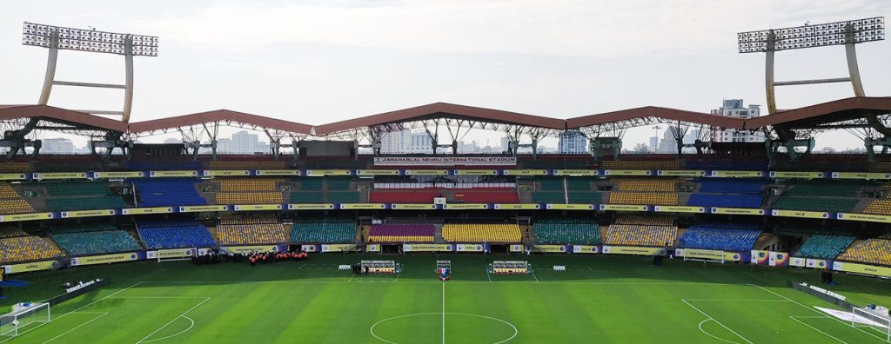
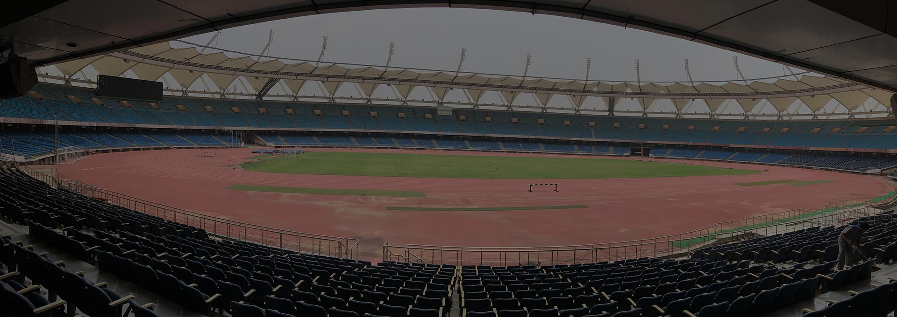
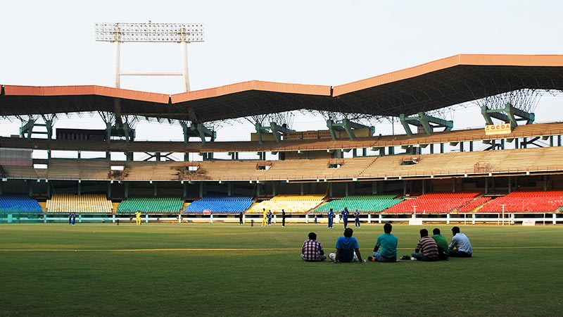

HOME




HOME
JAWAHARLAL NEHRU STADIUM
Our Home, Jawaharlal Nehru International Stadium, popularly known as the Kaloor Stadium situated in Kochi, Kerala is one of India’s largest and most modern venues. Completed in 1996, ahead of schedule, by the Greater Cochin Development Authority (GCDA), the stadium has a unique shape owing to the triple tiered stands, sloping and contemporary roof structure, modern turf, four-lane road from the southern side of the stadium and massive floodlight masts going through the roof. The lighting towers of 2kW flood lights is one of the most innovative aspects of the stadium, which when switched on fully can provide lighting levels for an HD telecast. The home of the Yellow Sea is widely touted to be one of the noisiest football stadiums in the world for the record crowds that the stadium accommodates and its distinctive architecture.
Originally constructed as a football stadium, it has also been used as a cricket ground by both the Kerala Cricket team and the national side. The Nehru Cup International Football Tournament was the first tournament that was conducted at the Kaloor Stadium in 1997. It was also one of the six host venues for the 2017 FIFA U-17 World Cup held in India. The home of the 2 time ISL finalists was also awarded, ‘The Best Pitch’ in 2018-19, owing to a high quality maintenance of its natural grass turf.